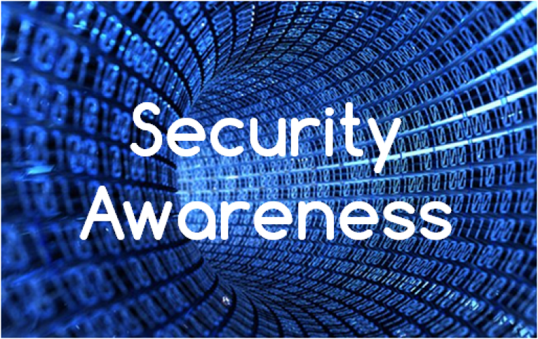
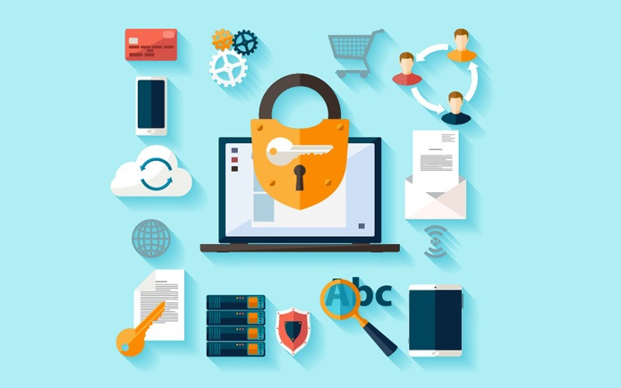
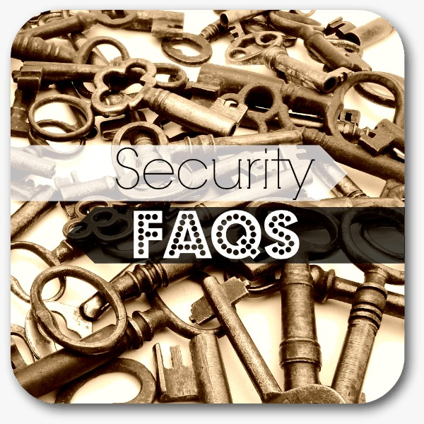
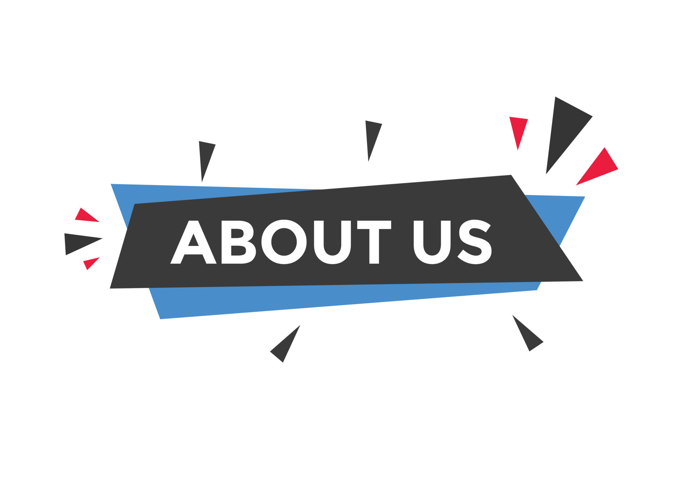

AWARENESS
In today's digital landscape, cybersecurity awareness is indispensable for individuals. From
safeguarding personal data to thwarting cyberattacks, awareness empowers users to navigate the
online world securely. By staying informed about emerging threats and adopting best practices
like strong password management and phishing awareness, individuals can mitigate risks and
protect themselves against cybercrime. Ultimately, cybersecurity awareness equips people with
the knowledge and tools needed to defend their digital identities and privacy, ensuring a safer
online experience for all.
Read More >>

TOOLS
Enhance your website's/social media security with our cutting-edge password tools – the Password
Checker and Password Generator. Our Password Checker enables users to assess the strength of
their passwords instantly, highlighting potential vulnerabilities and offering suggestions for
improvement. With this tool, users can ensure their passwords meet stringent security standards,
minimizing the risk of unauthorized access to their accounts. Additionally, our Password
Generator empowers users to create strong, unique passwords effortlessly. By generating random
combinations of characters, numbers, and symbols, this tool helps users fortify their online
accounts against brute force attacks and unauthorized intrusion. Incorporating these tools into
your website not only enhances user security but also fosters trust and confidence among your
audience.
Read More >>
HELPER
Protecting yourself online is paramount in today's digital age, and there are several key steps
you can take to bolster your cybersecurity defenses. First and foremost, ensure you use strong,
unique passwords for each of your accounts, and consider using a reputable password manager to
securely store them. Always be wary of suspicious emails, links, and attachments, as these could
be phishing attempts seeking to steal your personal information. Keep your software and devices
up-to-date with the latest security patches to defend against known vulnerabilities.
Additionally, consider enabling multi-factor authentication whenever possible to add an extra
layer of protection to your accounts. By staying vigilant and proactive in safeguarding your
digital presence, you can minimize the risk of falling victim to cyber threats and enjoy a safer
online experience.
Read More >>


FAQS
Cybersecurity FAQs are a handy resource designed to address common questions and concerns about
staying safe online. These FAQs cover topics like creating strong passwords, recognizing
phishing emails, and installing antivirus software. By providing straightforward answers to
these questions, users can better understand how to protect themselves from cyber threats.
Organizing FAQs into easy-to-navigate sections makes it simple for users to find the information
they need quickly. Regularly updating these FAQs ensures that users stay informed about the
latest cybersecurity best practices and threats, empowering them to navigate the digital world
with confidence.
Read More >>
ABOUT US
"We're dedicated to making awareness cybersecurity accessible and understandable for
everyone."
Read More >>
